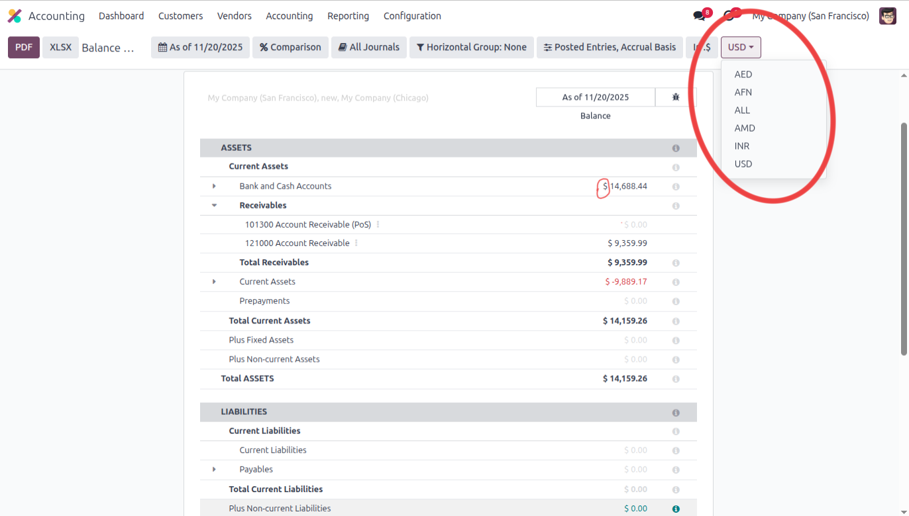
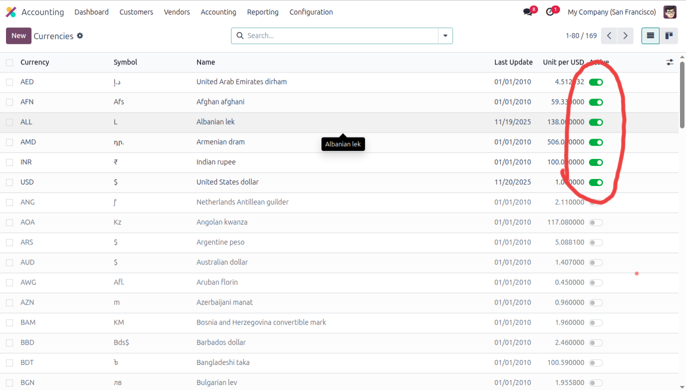
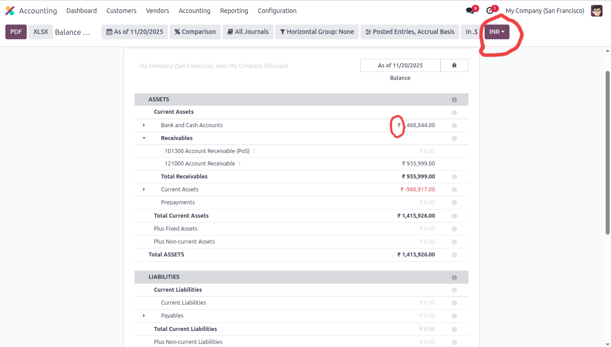
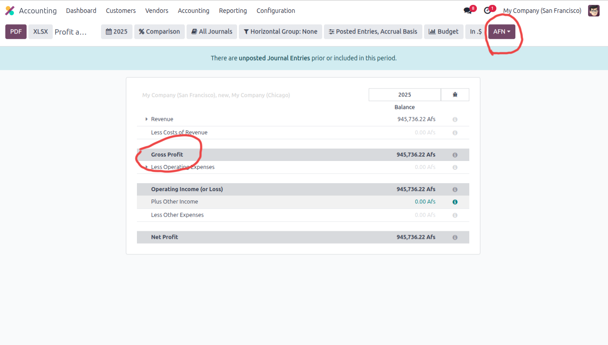
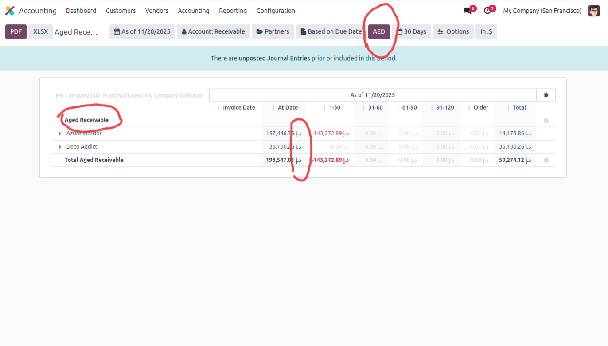
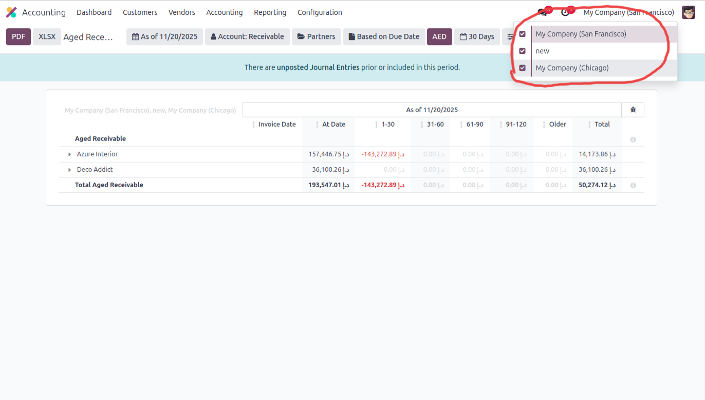

This module adds a dynamic currency switcher to Odoo’s accounting reports and performs real-time financial currency conversion for every report — without any configuration.
View Balance Sheet, P&L, Aged Receivable/Payable, Trial Balance, General Ledger, Cash Flow & more in any currency.
The screenshot below shows the Aged Receivable report using AED as the selected currency.
Currency Switcher: A new button appears in report filters to select any currency.
Instant Conversion: All balances, totals, subtotals and aging buckets are converted instantly.
Aged Report Support: Aged Receivable/Payable buckets (1–30, 31–60, 61–90…) are fully converted.
Fully Multi-Company: Each company’s base currency is converted independently.
No Configuration Needed: Works automatically with Odoo’s built-in currency rates.
Go to Accounting → Settings and enable Multi-Currency.
Go to Accounting → Reporting → Balance Sheet and use the Currency Switcher.
Select a currency (AED / USD / EUR) to convert the entire P&L report instantly.
Open Aged Receivable & Payable. All aging buckets are converted based on your selected currency.
Enable multiple companies for your user and select them. Each company’s base currency is automatically converted.
Note: This module does not modify journal entries. All conversions are calculated at report-time.